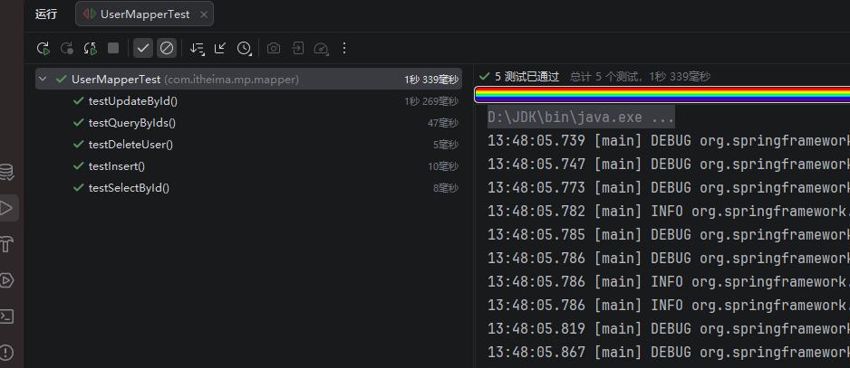
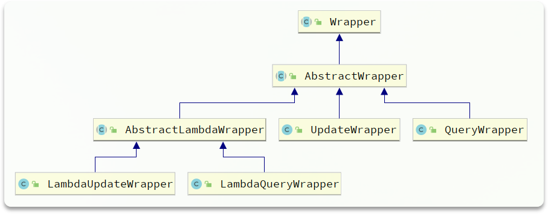
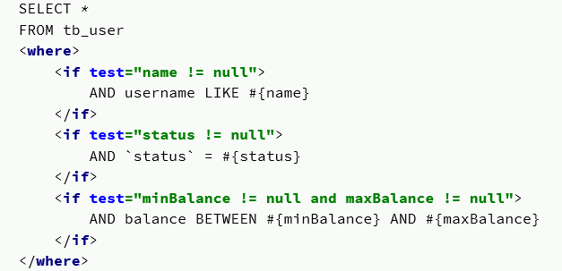

# 将单体项目拆解为微服务项目
# Demo1_再会 MyBatisPlus—— 将 MyBatis 工程改造为 MyBatisPlus 工程
# 引入 MyBatisPlus 依赖
<dependency> | |
<groupId>com.baomidou</groupId> | |
<artifactId>mybatis-plus-boot-starter</artifactId> | |
<version>3.5.5</version> | |
</dependency> |
# UserMapper 继承 BaseMapper
public interface UserMapper extends BaseMapper<User> { | |
void saveUser(User user); | |
void deleteUser(Long id); | |
void updateUser(User user); | |
User queryUserById(@Param("id") Long id); | |
List<User> queryUserByIds(@Param("ids") List<Long> ids); | |
} |
# 去除 UserMapper.java 与 UserMapper.xml 中的基础方法
public interface UserMapper extends BaseMapper<User> { | |
} |
<?xml version="1.0" encoding="UTF-8"?> | |
<!DOCTYPE mapper PUBLIC "-//mybatis.org//DTD Mapper 3.0//EN" "http://mybatis.org/dtd/mybatis-3-mapper.dtd"> | |
<mapper namespace="com.itheima.mp.mapper.UserMapper"> | |
</mapper> |
# 验证
# 为什么 MyBatisPlus 这么快？
MyBatisPlus 通过扫描实体类，基于反射获取到实体类信息座位数据库表基本信息
一下是一些提示
- 类名驼峰转下划线作为表名
- 名为 id 的字段作为主键
- 变量名驼峰转下划线作为表的字段名
# 常用注解
@TableName：用来指定表名
@TableId：用来指定表中的主键字段信息
@TableField：用来指定表中的普通字段信息
# 示例 1—— 表名与类名有明显差异使用 @TableName

@TableName("tb_user") | |
public class User { | |
private Long id; | |
private String username; | |
private String isMarried; | |
private String order; | |
} |
# 示例 2—— 主键字段名有明显差异使用 @TableId
@TableName("tb_user") | |
public class User { | |
@TableId(value = "id", type = IdType.AUTO) | |
private Long uuid; | |
private String username; | |
private String isMarried; | |
private String order; | |
} |
# type 策略
AUTO：数据库自增长
INPUT：通过 set 方法自行输入
ASSIGN_ID：分配 ID，接口 IdentifierGenerator 的方法 nextId 来生成 id，默认实现类为 DefaultIdentifierGenerator 雪花算法（20 位）
# 示例 3—— 字段名不符合其约定 @TableField
@TableName("tb_user") | |
public class User { | |
@TableId(value = "id", type = IdType.AUTO) | |
private Long uuid; | |
@TableField("username") | |
private String username; | |
@TableField("is_married") | |
private String isMarried; | |
@TableField("`order`") | |
private String order; | |
@TableField(exist = false) | |
private String address; | |
} |
# 使用 @TableField 的常见场景
- 成员变量名与数据库字段名不一致
- 成员变量名以 is 开头，且是布尔值
- 成员变量名与数据库关键字冲突
- 成员变量不是数据库字段
# 常见配置
mybatis-plus: | |
type-aliases-package: com.itheima.mp.domain.po # 别名扫描包 | |
mapper-locations: "classpath*:/mapper/**/*.xml" # Mapper.xml 文件地址，默认值 | |
configuration: | |
map-underscore-to-camel-case: true # 是否开启下划线和驼峰的映射 | |
cache-enabled: false # 是否开启二级缓存 | |
global-config: | |
db-config: | |
id-type: assign_id # id 为雪花算法生成 | |
update-strategy: not_null # 更新策略：只更新非空字段 |
具体可参考官方文档：MyBatisPlus 官方文档
# 条件构造器 Wrapper
# QueryWrapper 与 LambdaQueryWrapper
@Test | |
public void testWrapper() { | |
QueryWrapper<User> userQueryWrapper = new QueryWrapper<User>() | |
.select("id", "username", "info", "balance") | |
.like("username", "o") | |
.ge("balance", 1000); | |
List<User> users = userMapper.selectList(userQueryWrapper); | |
users.forEach(System.out::println); | |
System.out.println(userMapper.selectList(new LambdaQueryWrapper<User>() | |
.ge(User::getBalance, 1000) | |
.like(User::getUsername, "o") | |
.select(User::getId, User::getUsername, User::getInfo, User::getBalance))); | |
} |
# UpdateWrapper 与 LambdaUpdateWrapper
@Test | |
public void testWrapper() { | |
UpdateWrapper<User> userUpdateWrapper = new UpdateWrapper<User>() | |
.eq("id", 4L) | |
.setSql("balance = balance - 10"); | |
userMapper.update(null, userUpdateWrapper); | |
userMapper.update(null, new LambdaUpdateWrapper<User>() | |
.eq(User::getId, 4L) | |
.setSql("balance = balance - 10")); | |
} |
推荐使用 LQW / LUW 因为其类型安全、较高可维护性、对重构友好。用 Lambda 引用替代字符串字段名，在编译期发现错误，提高代码在重构和长期维护中的安全性。
# 自定义 SQL
@Test | |
public void testZZSQL(){ | |
List<Long> ids = List.of(2L, 3L, 4L); | |
int amount = 2; | |
LambdaUpdateWrapper<User> userLambdaUpdateWrapper = new LambdaUpdateWrapper<User>() | |
.in(User::getId, ids); | |
userMapper.updateByIds(userLambdaUpdateWrapper, amount); | |
} |
public interface UserMapper extends BaseMapper<User> { | |
/** | |
* 根据 id 批量更新余额 | |
* | |
* @param userLambdaUpdateWrapper 条件 | |
* @param amount 金额 | |
*/ | |
// @Update("update tb_user set balance = balance - #{amount} ${ew.customSqlSegment}") | |
void updateByIds(@Param(Constants.WRAPPER) LambdaUpdateWrapper<User> userLambdaUpdateWrapper, @Param("amount") int amount); | |
} |
<mapper namespace="com.itheima.mp.mapper.UserMapper"> | |
<update id="updateByIds"> | |
update tb_user set balance = balance - #{amount} ${ew.customSqlSegment} | |
</update> | |
</mapper> |
Constants.WRAPPER 为 MP 常量就是 ew 在 SQL 中也可以看到有关 ew 的操作： ${ew.customSqlSegment}
# Service 接口

public interface IUserService extends IService<User> { | |
} |
public class UserServiceImpl extends ServiceImpl<UserMapper, User> implements IUserService { | |
} |
这样就可以使用了
@SpringBootTest | |
class UserServiceImplTest { | |
@Autowired | |
private IUserService userService; | |
@Test | |
public void testInsert() throws JsonProcessingException { | |
HashMap<Object, Object> objectObjectHashMap = new HashMap<>(); | |
objectObjectHashMap.put("age", 22); | |
objectObjectHashMap.put("intro", "程序员"); | |
objectObjectHashMap.put("gender", "male"); | |
ObjectMapper objectMapper = new ObjectMapper(); | |
String json = objectMapper.writeValueAsString(objectObjectHashMap); | |
User lkr = User.builder().username("lkr") | |
.password("123123") | |
.phone("666666") | |
.info(json).status(1).balance(45454).build(); | |
userService.save(lkr); | |
} | |
@Test | |
public void testQuery(){ | |
System.out.println(userService.listByIds(List.of(1L, 2L, 3L, 4L))); | |
} | |
} |
# Controller 技巧
通常我们在 Controller 注入 Service 我们会这样写：
@Api(tags = "用户管理接口") | |
@RestController | |
@RequestMapping("/users") | |
public class UserController { | |
@Autowired | |
private IUserService userService; | |
} |
尽管可以，但是 Spring 官方反对的字段注入，因为 Service 层是不会变的，使用 final 更为合适，但字段注入 无法使用 final ，并且容易造成循环依赖
在 IDEA 的自动修复中推荐道：
@Api(tags = "用户管理接口") | |
@RestController | |
@RequestMapping("/users") | |
public class UserController { | |
private final IUserService userService; | |
public UserController(IUserService userService) { | |
this.userService = userService; | |
} | |
} |
尽管快捷键两部就能生成，但是不够优雅，如果你的项目中可以使用 Lombok，我推荐这样写：
@Api(tags = "用户管理接口") | |
@RestController | |
@RequestMapping("/users") | |
@RequiredArgsConstructor | |
public class UserController { | |
private final IUserService userService; | |
} |
这样不仅保持了 @Autowired 的简介模式，还避免了字段注入。 @RequiredArgsConstructor 是自动生成 “必要参数” 的构造方法，“必要参数” 指的是：
final修饰的字段- 被
@NonNull修饰的字段
使用 @RequiredArgsConstructor 注解，会在编译期生成必要参数的构造方法。
# Bean 拷贝技巧
前端或者客户端通常会给我们传一个在我们后端称之为 DTO 的数据，这是一个表单信息，包含了相应实体的核心信息，但是核心始终是核心，并不是完整的源实体，使用 MP 的 IService 方法时，如果你给我传了一个 DTO，这会报错， Bean拷贝 就是为了解决这个问题而诞生的。
# Hutool-BeanUtil 一句话解决问题
BeanUtil.copyProperties(userFormDTO, User.class) |
他会读取 userFormDTO 的信息，然后根据你指定的的类，这里就是 User.class 来生成源实体。
@Api(tags = "用户管理接口") | |
@RestController | |
@RequestMapping("/users") | |
@RequiredArgsConstructor | |
public class UserController { | |
private final IUserService userService; | |
@ApiOperation("新增用户信息") | |
@PostMapping | |
public void saveUser(@RequestBody UserFormDTO userFormDTO) { | |
userService.save(BeanUtil.copyProperties(userFormDTO, User.class)); | |
} | |
} |
# Hutool-BeanUtil 批量拷贝
BeanUtil.copyToList(userService.listByIds(ids),UserVO.class); |
@ApiOperation("根据id批量查询") | |
@GetMapping | |
public List<UserVO> listUser(@RequestParam @ApiParam("用户id列表") List<Long> ids) { | |
return BeanUtil.copyToList(userService.listByIds(ids),UserVO.class); | |
} |
# IService 的 Lambda 查询
lambdaQuery 中有很多很方便的东西。
比如：
@Override | |
public List<User> queryList(String name, Integer status, Integer minBalance, Integer maxBalance) { | |
return this.lambdaQuery() | |
.like(name != null, User::getUsername, name) | |
.eq(status != null, User::getStatus, status) | |
.ge(minBalance != null, User::getBalance, minBalance) | |
.le(maxBalance != null, User::getBalance, maxBalance) | |
.list(); | |
} |
看这两个参数：
boolean condition, R column, Object val |
condition 就是如果是 true 就放行这个条件（使之生效），xxx != null 那就是存在，存在的话就要生效就行。
他很好的解决了 xml 中繁杂的 if 判断：
同样的 LambdaUpdate 也可以这样：
boolean update = this.lambdaUpdate() | |
.set(User::getBalance, remainBalance) | |
.set(remainBalance == 0, User::getStatus, 2) | |
.eq(User::getId, id) | |
.update(); |
# 顺便一提乐观锁与悲观锁
@Override | |
@Transactional | |
public void deductBalance(Long id, Integer money) { | |
User user = baseMapper.selectById(id); | |
if (user == null || user.getStatus() == 2) { | |
throw new RuntimeException("用户不存在或者已冻结"); | |
} | |
if (user.getBalance() < money) { | |
throw new RuntimeException("余额不足"); | |
} | |
int remainBalance = user.getBalance() - money; | |
boolean update = this.lambdaUpdate() | |
.set(User::getBalance, remainBalance) | |
.set(remainBalance == 0, User::getStatus, 2) | |
.eq(User::getId, id) | |
.eq(User::getBalance, user.getBalance()) | |
.update(); | |
if (!update) { | |
throw new RuntimeException("更新用户余额失败"); | |
} | |
System.out.println("更新用户余额成功，用户id：" + id + "，用户余额：" + remainBalance); | |
} |
这是乐观锁的一种实现方式，通过在 update 时校验旧的 balance 值来保证并发安全，属于基于 CAS 思想的条件更新，但不是 MyBatisPlus 内置的 @Version 标准乐观锁。
乐观锁和悲观锁都是并发控制手段。乐观锁与悲观锁都是基于一种假设，乐观锁假设冲突很少，更新时才检查数据有没有被别人改过，悲观锁假设冲突一定会发生，操作数据前先把它锁住。
悲观锁假设并发冲突一定发生，在操作数据前先加锁，其他线程必须等待。在高并发、读多写少的场景下一般使用乐观锁，在强一致、冲突频繁的场景才使用悲观锁。
# 批量新增
不要使用 for 循环来添加，请使用：
this.saveBatch() |
推荐通过 MySQL 开启：rewriteBatchedStatements=true 参数，这样会更快。
# 静态工具
静态工具适合用于多表查询问题，如果我们在 AService 需要用到 BService 中的内容时，我们往往会想要在 AService 中注入一个 BService，然而问题在于，如果 BService 也需要 AService 的内容呢？要在 BService 也注入一个 AService 吗，那就产生了循环依赖问题。诚然我们也可以注入一个 BaseMapper，但是毕竟 Service 更加强大，此时 静态工具 应运而生。
@Service | |
public class UserServiceImpl extends ServiceImpl<UserMapper, User> implements IUserService { | |
@Override | |
public UserVO queryUserAndAddressById(Long id) { | |
User user = this.getById(id); | |
if (user == null || user.getStatus() == 2) | |
throw new RuntimeException("用户不存在或者已冻结"); | |
List<Address> addresses = Db.lambdaQuery(Address.class) | |
.eq(Address::getUserId, id) | |
.list(); | |
UserVO userVO = BeanUtil.copyProperties(user, UserVO.class); | |
if (addresses != null){ | |
userVO.setAddressList(BeanUtil.copyToList(addresses, AddressVO.class)); | |
} | |
return userVO; | |
} | |
} |
这是一个在 UserService 中需要查 AddressService 的场景，其实就是要把用户信息和用户地址拼在一起，场景很常见。使用 Db.lambdaQuery(Address.class) 来实现， Db 中时 Service 的方法，只不过是静态的，通过指定类来实现反射。
# 善用 stream 流
@Override | |
public List<UserVO> listUserByIds(List<Long> ids) { | |
List<User> users = this.listByIds(ids); | |
if (users == null) { | |
return Collections.emptyList(); | |
} | |
List<Long> collect = users.stream().map(User::getId).collect(Collectors.toList()); | |
List<Address> addresses = Db.lambdaQuery(Address.class) | |
.in(Address::getUserId, collect) | |
.list(); | |
List<AddressVO> addressVOS = BeanUtil.copyToList(addresses, AddressVO.class); | |
Map<Long, List<AddressVO>> addressMap = new HashMap<>(); | |
if (CollUtil.isNotEmpty(addressVOS)) { | |
addressMap = addressVOS.stream().collect(Collectors.groupingBy(AddressVO::getUserId)); | |
} | |
ArrayList<UserVO> userVOS = new ArrayList<>(users.size()); | |
for (User user : users) { | |
UserVO userVO = BeanUtil.copyProperties(user, UserVO.class); | |
userVOS.add(userVO); | |
userVO.setAddressList(addressMap.get(user.getId())); | |
} | |
return userVOS; | |
} |
# 逻辑删除
mybatis-plus: | |
global-config: | |
db-config: | |
logic-delete-field: flag # 全局逻辑删除的实体字段名，字段类型可以是 boolean、integer | |
logic-delete-value: 1 # 逻辑已删除值 (默认为 1) | |
logic-not-delete-value: 0 # 逻辑未删除值 (默认为 0) |
# 枚举处理器 @EnumValue
@Getter | |
public enum UserStatus { | |
NORMAL(1, "正常"), | |
FROZEN(2, "冻结"); | |
@EnumValue | |
@JsonValue | |
private final int value; | |
private final String desc; | |
UserStatus(int value, String desc) { | |
this.value = value; | |
this.desc = desc; | |
} | |
} |
@EnumValue 指定的是在数据库中实际的存储类型，一般是 bool 类或者 int 类，主要取决你数据库的定义，而 @EnumValue 只需要加载数据库需要的类型上就行，然后返回到前端之前我们一般传一个 JSON，这个时候 @JsonValue 就起作用了， @JsonValue 加在那个数据上面，JSON 就返回哪个数据。当然不要忘记，User、UserVO 中的字段替换成相应的枚举类型。
# JSON 处理器
JSON 处理器的目的是把存储在数据库的 JSON 串转换为 Java 对象。
@TableName(value = "tb_user", autoResultMap = true) | |
public class User { | |
@TableId(type = IdType.AUTO) | |
private Long id; | |
private String username; | |
private String password; | |
private String phone; | |
@TableField(typeHandler = JacksonTypeHandler.class) | |
private UserInfo info; | |
private UserStatus status; | |
private Integer balance; | |
private LocalDateTime createTime; | |
private LocalDateTime updateTime; | |
} |
注意： @TableName(value = "tb_user", autoResultMap = true) 和 @TableField(typeHandler = JacksonTypeHandler.class)
# 插件 —— 分页插件
MyBatisPlus 给我们提供了插件功能这个插件功能首先通过一个总的插件注册器来实现，后续如果我们需要什么插件的话，可以直接在这个总的插件器上进行挂载。
@Configuration | |
public class MyBatisConfig { | |
@Bean | |
public MybatisPlusInterceptor mybatisPlusInterceptor() { | |
MybatisPlusInterceptor interceptor = new MybatisPlusInterceptor(); | |
PaginationInnerInterceptor paginationInnerInterceptor = new PaginationInnerInterceptor(DbType.MYSQL); | |
paginationInnerInterceptor.setMaxLimit(1000L); | |
interceptor.addInnerInterceptor( | |
paginationInnerInterceptor | |
); | |
return interceptor; | |
} | |
} |
# 通用分页实体
@Data | |
@ApiModel(description = "分页查询条件实体") | |
public class PageQuery { | |
@ApiModelProperty("页码") | |
private Integer pageNo; | |
@ApiModelProperty("每页数量") | |
private Integer pageSize; | |
@ApiModelProperty("排序字段") | |
private String sortBy; | |
@ApiModelProperty("是否升序") | |
private Boolean isAsc; | |
} |
其他条件可以继承 page：
@EqualsAndHashCode(callSuper = true) | |
@Data | |
@ApiModel(description = "用户查询条件实体") | |
public class UserQuery extends PageQuery { | |
@ApiModelProperty("用户名关键字") | |
private String name; | |
@ApiModelProperty("用户状态：1-正常，2-冻结") | |
private Integer status; | |
@ApiModelProperty("余额最小值") | |
private Integer minBalance; | |
@ApiModelProperty("余额最大值") | |
private Integer maxBalance; | |
} |
# 通用分页返回实体
@Data | |
@ApiModel(description = "分页结果") | |
public class PageDTO<T> { | |
@ApiModelProperty("总记录数") | |
private Long total; | |
@ApiModelProperty("总页数") | |
private Long pages; | |
@ApiModelProperty("当前页数据") | |
private List<T> list; | |
} |
# 实现案例
@Override | |
public PageDTO<UserVO> queryListPage(UserQuery condition) { | |
Page<User> userPageCondition = Page.of(condition.getPageNo(), condition.getPageSize()); | |
if (condition.getSortBy() != null && !condition.getSortBy().isEmpty()) { | |
userPageCondition.addOrder(new OrderItem().setColumn(condition.getSortBy()).setAsc(condition.getIsAsc())); | |
} else { | |
userPageCondition.addOrder(new OrderItem().setColumn("update_time").setAsc(true)); | |
} | |
Page<User> userPage = lambdaQuery() | |
.like(condition.getName() != null, User::getUsername, condition.getName()) | |
.eq(condition.getStatus() != null, User::getStatus, condition.getStatus()) | |
.ge(condition.getMinBalance() != null, User::getBalance, condition.getMinBalance()) | |
.le(condition.getMaxBalance() != null, User::getBalance, condition.getMaxBalance()) | |
.page(userPageCondition); | |
PageDTO<UserVO> userPageDTO = new PageDTO<>(); | |
userPageDTO.setTotal(userPage.getTotal()); | |
userPageDTO.setPages(userPage.getPages()); | |
List<User> records = userPage.getRecords(); | |
if (records == null) { | |
userPageDTO.setList(Collections.emptyList()); | |
return userPageDTO; | |
} | |
userPageDTO.setList(BeanUtil.copyToList(records, UserVO.class)); | |
return userPageDTO; | |
} |
# 兄弟，还能更方便！
原来这种实现，实际上业务逻辑只占到很小一部分，我来说一下！
代码一开始：
Page<User> userPageCondition = Page.of(condition.getPageNo(), condition.getPageSize()); | |
if (condition.getSortBy() != null && !condition.getSortBy().isEmpty()) { | |
userPageCondition.addOrder(new OrderItem().setColumn(condition.getSortBy()).setAsc(condition.getIsAsc())); | |
} else { | |
userPageCondition.addOrder(new OrderItem().setColumn("update_time").setAsc(true)); | |
} |
构造了一个 Page，然后对需要做排序的条件进行了设置。
这里是我们的核心查询语句：
Page<User> userPage = lambdaQuery() | |
.like(condition.getName() != null, User::getUsername, condition.getName()) | |
.eq(condition.getStatus() != null, User::getStatus, condition.getStatus()) | |
.ge(condition.getMinBalance() != null, User::getBalance, condition.getMinBalance()) | |
.le(condition.getMaxBalance() != null, User::getBalance, condition.getMaxBalance()) | |
.page(userPageCondition); |
紧接着，就是又一次参数的设置和类型转换：
PageDTO<UserVO> userPageDTO = new PageDTO<>(); | |
userPageDTO.setTotal(userPage.getTotal()); | |
userPageDTO.setPages(userPage.getPages()); | |
List<User> records = userPage.getRecords(); | |
if (records == null) { | |
userPageDTO.setList(Collections.emptyList()); | |
return userPageDTO; | |
} | |
userPageDTO.setList(BeanUtil.copyToList(records, UserVO.class)); | |
return userPageDTO; |
我们能不能把创建 Page 和后面的整理 DTO 再进行一次封装呢？
我们可以这样：
- 在 PageQuery 中定义方法，将 PageQuery 对象转为 MyBatisPlus 中的 Page 对象
- 在 PageDTO 中定义方法，将 MyBatisPlus 中的 Page 结果转为 PageDTO 结果
@Data | |
@ApiModel(description = "分页查询条件实体") | |
public class PageQuery { | |
@ApiModelProperty("页码") | |
private Integer pageNo = 1; | |
@ApiModelProperty("每页数量") | |
private Integer pageSize = 5; | |
@ApiModelProperty("排序字段") | |
private String sortBy; | |
@ApiModelProperty("是否升序") | |
private Boolean isAsc = true; | |
public <T> Page<T> toMpPage() { | |
Page<T> userPageCondition = Page.of(pageNo, pageSize); | |
if (sortBy != null && !sortBy.isEmpty()) { | |
userPageCondition.addOrder(new OrderItem().setColumn(sortBy).setAsc(isAsc)); | |
} else { | |
userPageCondition.addOrder(new OrderItem().setColumn("update_time").setAsc(false)); | |
} | |
return userPageCondition; | |
} | |
public <T> Page<T> toMpPage(OrderItem... items) { | |
Page<T> userPageCondition = Page.of(pageNo, pageSize); | |
if (sortBy != null && !sortBy.isEmpty()) { | |
userPageCondition.addOrder(new OrderItem().setColumn(sortBy).setAsc(isAsc)); | |
} else if (items != null) { | |
userPageCondition.addOrder(items); | |
} | |
return userPageCondition; | |
} | |
} |
@Data | |
@ApiModel(description = "分页结果") | |
public class PageDTO<T> { | |
@ApiModelProperty("总记录数") | |
private Long total; | |
@ApiModelProperty("总页数") | |
private Long pages; | |
@ApiModelProperty("当前页数据") | |
private List<T> list; | |
public static <PO, VO> PageDTO<VO> of(Page<PO> pageT, Class<VO> clazz) { | |
PageDTO<VO> userPageDTO = new PageDTO<>(); | |
userPageDTO.setTotal(pageT.getTotal()); | |
userPageDTO.setPages(pageT.getPages()); | |
List<PO> records = pageT.getRecords(); | |
if (records == null || records.isEmpty()) { | |
userPageDTO.setList(Collections.emptyList()); | |
return userPageDTO; | |
} | |
userPageDTO.setList(BeanUtil.copyToList(records, clazz)); | |
return userPageDTO; | |
} | |
public static <PO, VO> PageDTO<VO> of(Page<PO> pageT, Class<VO> clazz, Function<PO, VO> convertor) { | |
PageDTO<VO> userPageDTO = new PageDTO<>(); | |
userPageDTO.setTotal(pageT.getTotal()); | |
userPageDTO.setPages(pageT.getPages()); | |
List<PO> records = pageT.getRecords(); | |
if (records == null || records.isEmpty()) { | |
userPageDTO.setList(Collections.emptyList()); | |
return userPageDTO; | |
} | |
userPageDTO.setList(records.stream().map(convertor).collect(Collectors.toList())); | |
return userPageDTO; | |
} | |
} |